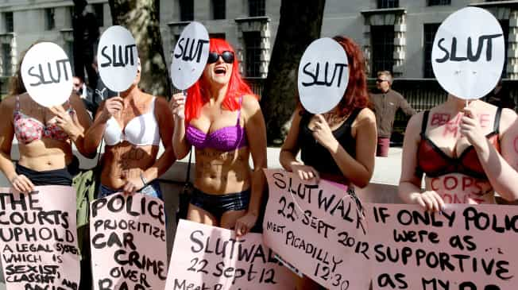
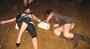

< < < Back
British Socialist Politician Says Eating Disorders Are Caused By Female Narcissism – Return Of Kings
Baroness Joan Bakewell has excoriated young women, including teenagers, for their narcissism, which she claims is the root cause of eating disorders. Bakewell, who sits as a life peer in the British House of Lords, is a Labour Party stalwart, one of the people you would least expect to come out with these kinds of comments. Now in her eighties, a lifetime of experience and the knowledge that she has probably few years left on Earth has allowed her to speak the truth.
Naturally, online and other abuse was hurled at the Baroness for her common sense approach. The elderly woman has apologized this week, clearly a bid to stem the wave of unacceptable harassment she received. Although this treatment would have been undoubtedly worse if we were dealing with Baron Bakewell, what was meted out to her is an indication of the savage vitriol even octogenarians will be hit by if they dare to speak publicly in a way SJWs do not like.
That eating disorders are a sign of narcissism should not be a surprise to anyone who reads Return Of Kings. Worse still, this narcissism is by no means limited to cases involving anorexia, bulimia, or something similar. Entire relationships, like that of caught-out gold-digger Nina Paunova and her long-suffering boyfriend Sam Scott, are oftentimes defined and wrecked by the vanity and petulant demands of the female.
A particularly astute point of Bakewell’s that critics are having a hard time countering is the lack of anorexia in places like Syria or Africa. Unlike narcissism in the form of materialism, you do not need an abundance of food to be anorexic. Instead, eating disorders, with few exceptions, are a sign of women finding “liberation” and exercising self-direction by starving themselves and spending hours in front of mirrors. Incidentally, despite some evidence that there were anorexics and bulimics in previous decades, the decline of patriarchal conceptions of society has coincided with a massive growth in eating disorders. Why is that?
Here’s why feminists and others do not want eating disorders to be seen as narcissistic

The feminist pseudo-concepts of the patriarchal policing of women’s body types and slut-shaming are quickly destroyed when reference is made to female sexual competition and female-on-female shaming.
Notions of patriarchy as defined by feminists depend on women being forced into damaging behaviors. That whole narrative is blown out of the water when women obsessed with their bodies are perceived as having control or choice in what they do, especially when a female socialist politician like Baroness Bakewell affirms it. Even some or many feminists acknowledge Kim Kardashian is self-absorbed and vain, but, no, women who reduce themselves to just skin and bones cannot be narcissistic.
An entire political industry has developed from self-appointed women who are paid large sums of money to falsely attack society for supposedly steamrolling women into hating themselves. One of those in Britain, Natasha Devon, who was obliterated on television by Milo Yiannopoulos, became a “body advocate” at the same time her modeling career was disintegrating because younger, prettier girls were emerging.
Feminists are desperate to hide the facts about women and body image issues. For instance, science has chronicled how women dress to compete with one another. Indirectly, yes, they are competing for the best male suitors (and more proximately, attention from men). Yet this has precious little to do with so-called patriarchy and everything to do with biology and female-on-female social wrestling. Women are fundamentally forcing each other into more and more audacious displays of flesh in the right places and dolled-up faces.
Likewise, fellow females attack women for being sluts just as much, if not more than men do. The catalyst for the two major forms of female self-hatred, body insecurities and sexual shaming, is therefore on the backs of women themselves. Because, as I indicated earlier, the expansion of female choice has dovetailed completely with the proliferation of eating disorders, feminists need to shut down debates over these expressions of narcissism as quickly as possible. They have no arguments, so even elderly women need to be silenced with harassment.
When female choice results in awful consequences, feminists need someone to blame

Look what the patriarchy did!
The pernicious consequences of certain forms of female choice refers to social forces, not just personal ones. Nonetheless, they are female-related and have nothing to do with men or the invisible patriarchy. I have never met, nor have you probably, a man attracted to an anorexic or bulimic who looks like an anorexic. As a result, the 11, 12 or 13-year-old who first starts to obsess over her body does so because of wider female behaviors she learns and her own desire to look the prettiest amongst her friends.
Whether you call the influence of feminism a case of sexual deregulation or a violation of the natural order, it is categorically obvious that the female emancipation feminists desire has been accompanied by spiraling rates of both starvation-related eating disorders and, on the other end, morbid obesity. Women are not happy and feminism is to blame, so the automatic feminist response is to point fingers at the patriarchy political correctness has already dismantled.
In spite of her forced apology, Return Of Kings applauds and stands with the brave comments of Baroness Bakewell.
Read More: Publisher Response To The “Eating Disorders” Article